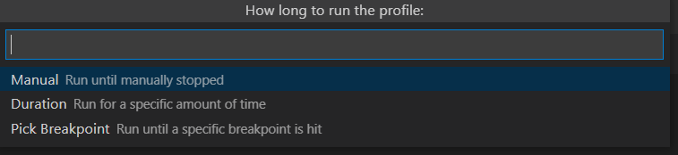

vscode调试定位node.js项目死循环代码
按 f5 进入调试模式
在调试选项卡中的调试堆栈内的条目上右键可以发现有一个
Take Performance Profile
的选项
点击后又有三种模式可选择

我们选第一种，然后去复现触发死循环的行为
过一会后再Stop
此时vscode会生成并打开这样的一个文件
哪个函数在耗时一目了然，并且可以直接跳转到相关的代码处
vscode 强无敌✔ !